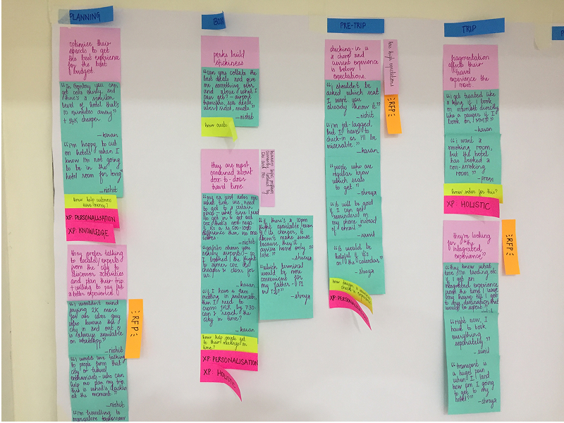
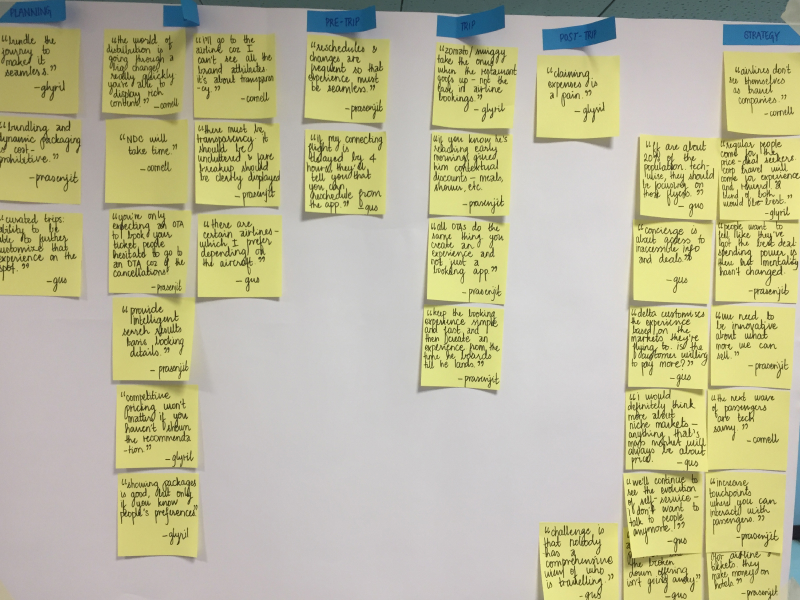
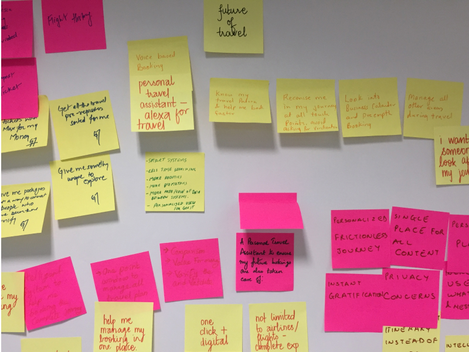
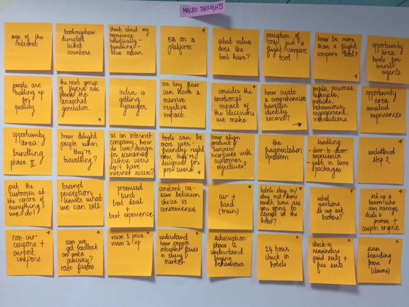

The Founding Thesis
The world doesn't need another way to book tickets.
That was our starting constraint. I joined Blinctrip as Head of Product & Design in January 2019, as part of the founding team. Twenty years after the first OTA, booking flights was a solved problem. Price comparison, loyalty integrations, seat selectors — all of it existed, and the incumbents had a decade of data advantage. We weren't going to out-OTA MakeMyTrip.
That was the bet: the post-booking experience was broken, underinvested, and worth exploring.
Role
Head of Product & Design
Type
Founding team
Duration
Jan 2019 – 2026
Domain
Travel tech · Consumer
Bottom Line Upfront
Nobody owned what happened after you paid. We did.
We built Blinctrip on the premise that travel stress — not pricing or inventory — was the unsolved problem worth owning. Every incumbent had abandoned their customers the moment the transaction completed. If we could solve for stress, we could build a great business.
We placed two bets — Door-to-door search and Trip Management — both in service of the same premise: making a traveller feel looked after from the time they booked their ticket to the time they got back home. We built a unique travel platform that survived the pandemic and the liquidity crunch that followed, then rebuilt the product around an AI-first architecture before the rest of the industry knew that was the right call.
The bet that defined the exit was made in early 2023: throwing out the rule-based notification engine and replacing it with an AI-driven system that reasoned about context rather than triggering on rules — a full year before agentic AI became a product category.
Blinctrip was acquired for $30M by a NASDAQ-listed travel technology company. Before it was folded into the acquirer's product suite — it was generating $1.2M/month, had 49% users returning within 3 months and was rated 4.6 on the App Store. Blinctrip is dead, long live Blinctrip.
Strategy in three parts
Whoever owns the stress-free travel experience owns a very large business.
Urban active travellers are the most valuable customers in the travel industry. Becoming their preferred app is a very large business.
Frequent travellers aged 22–40, work and leisure, top 24 cities — this audience represents the most powerful distribution platform in travel. They take more trips, plan further ahead, and spend more on ancillary services. Owning them means owning the highest-value, highest-context customers in the industry.
Reducing travel stress makes us their preferred travel app.
Stress in travel is caused by information asymmetry — the gate change you didn't know about, the cab timing you miscalculated, the bag belt you had to guess. Travellers don't remember price — they remember how a trip felt. Whoever eliminates that asymmetry consistently earns the habitual open rate that no loyalty programme can manufacture. It's also the most defensible moat in travel, because it requires depth of integration across the entire journey — not a single feature any competitor can copy.
Designing for the entire traveller lifecycle produces a 10x better experience — and earns the title of default travel app.
A single international trip involves planning, booking, pre-trip preparation (documents, visas, check-in, timing), travel day (queues, gates, bags), and return. Reducing stress in one area doesn't produce a behavioural shift. If you build for only one segment, you will lose to the product that solves the whole journey. This is why the scope had to be the entire traveller lifecycle — and why a booking engine alone was never the answer.
Research
"I want someone to look after my journey."
Before a line of code was written, I ran discovery sessions with 50 users across three groups — frequent business travellers, travel managers, and airline operations staff. Sessions were structured around the traveller journey: Planning, Booking, Pre-trip, Trip, Post-trip. The walls below show the output.
The constraint going in: don't build what customers ask for. They describe symptoms. The job is to diagnose the condition underneath.




Synthesis sessions, 2019 — 50 participants across travellers, travel managers, and airline staff.
The signal was consistent across all three groups: travellers felt abandoned the moment they paid. The OTA had taken the transaction. Nobody owned what came next — and that gap was where almost all the stress lived.
Positioning
Not an OTA. Not a trip manager. The intersection nobody had built.
The competitive landscape divided cleanly into two camps. Booking platforms — MakeMyTrip, Goibibo, Cleartrip, EaseMyTrip — competed on price and inventory. They were volume businesses. Post-booking experience was a cost centre, not a value driver. There was no structural incentive to invest in it.
Trip management tools — TripIt, Flighty, App in the Air — helped you track what you'd already booked. Useful, but niche. No booking capability meant no path to mainstream adoption.
Blinctrip could sit at the intersection: booking capability that gets you in the door, and a post-booking experience that earns the relationship. Pricing at parity. Below par initially on hotel and bus inventory. Clearly above par on the one dimension high-frequency travellers were most dissatisfied with.
Competitive position
Pure OTA
Compete on price and inventory. No structural differentiation. Fighting MakeMyTrip for the same customer with less data, less volume, and no moat.
Booking + Travel Management
Own the transaction and the relationship. At parity on price. Above par on post-booking. Build defensibility through engagement depth, not supply chain.
"OTAs are in the e-commerce business. Blinctrip is in the platform business."
The entry strategy was deliberately indirect — a Trojan horse. Build the booking engine first, because booking is where travellers are. Use it to earn the initial relationship and create the itinerary that powers everything else. But the booking engine was never the business. It was the onramp. Every traveller who booked a flight became a traveller we could help for the entire trip.
Version 1 — Checking Resonance
Two distinct assumptions. Tested separately.
A thesis isn't a product. Before committing to the full platform vision, I structured two hypothesis-led MVPs — each with a specific question, a minimum build, and a single success metric. The goal wasn't to validate the entire strategy. It was to get real signal on the two riskiest assumptions before building further.
Can we get adoption on the premise of "book a seamless journey" — door to door, not just airport to airport?
Learning
Short-term booking metrics obscured the signal. Qualitative feedback was more predictive than the numbers.
If the post-booking experience is genuinely valuable, we'll see meaningfully higher repeat bookings on mobile — where the experience lives.
Learning
The gap between 35% and 20% wasn't marginal. It was the thesis proving itself in the only metric that mattered.
The Decision Tree
The pandemic hit. D2D search lost traction. Trips kept growing. I made a call.
We'd launched two parallel bets before the world shut down. Post-pandemic, the market had shifted structurally. D2D search depended on confidence in complex itineraries — confidence that travellers had temporarily lost. Trips held its traction. People still travelled; they wanted more control and information, not less.
By June 2022, the data was unambiguous. The question wasn't whether to drop D2D — it was whether to pursue Trips as a feature or as the product. That was the harder call.
Start build — Early 2019
Two parallel bets
D2D Search (premise: seamless booking) and Trips (premise: post-booking ownership) launched simultaneously. Both had traction pre-pandemic.
Jun 2021 — Post-pandemic
Signal divergence
D2D Search traction declining as travel confidence remained fragile. Trips holding — travellers wanted more help with what they'd already booked, not more complex booking flows.
Jun 2022
The data forces the decision
D2D Search — dropped & defunded
Not a wrong insight. Wrong timing, wrong funding environment to wait it out. The call was to cut it cleanly rather than let it bleed resources.
Trips → Platform bet
Double down. Rework the conceptual model for scale. Turn Trips from a feature into the core product and the company's primary value driver.
Sep 2022
Travel assistant repositioning
Shifted from "OTA with better trips" to "travel assistant that also books." The platform logic: pull together service provider data, destination context, and personal information — and use them to eliminate stress at every lifecycle stage.
Nov 2022 → Acquisition
AI bet + acquisition path
Leisure travel driving growth. Roadmap extended into collaborative trip management and a critical AI bet on the notification engine — the decision that defined the exit.
Killing D2D during a funding crunch was the hardest decision of the build. It's easy to kill a bet that's failing on bad fundamentals. It's harder to kill one that's failing on timing — knowing you might be right, but unable to afford to wait. We killed it. It was the right call.
The Platform Bet
Turning Trips into a platform. 2 + 2 = 5.
Think of it like Slack. Slack's product is messaging — but its business is the workspace that every team app plugs into. The itinerary is Blinctrip's equivalent of the workspace. Once a traveller's trip lives in Trips, every piece of information — flight status, cab timing, hotel check-in, documents, disruption alerts — plugs into that single source of truth. The traveller stops switching apps. The platform becomes the operating system for their journey.
The platform thesis had six interdependent actions. Each was necessary; none was sufficient alone. The sequence mattered because each unlock created the foundation for the next one.
Redesign Trips. The V1 model couldn't scale. Rework the conceptual model and build modular architecture — each component of a trip (flight, hotel, cab, document, notification) as an independent, composable unit that could evolve without breaking the whole.
Improve engagement at stress peaks. Build high, sharp engagement moments at the points of highest traveller anxiety — pre-trip preparation, the journey itself, arrival — rather than spreading thin engagement across the whole lifecycle. Stress peaks are also attention peaks.
Build frequency through stickiness. Each version introduced a new reason to return. Never miss a flight. Auto-import documents. Check in automatically. Share your trip. Get destination updates. Import all bookings from email. Habits compound.
Redefine onboarding. Booking flows are funnels to Trips, not ends in themselves. Redefined "onboarded" as a user who has experienced Trips once. Every touch in the booking flow surfaced a Trips capability — saved home address, saved travellers, seat preferences — reducing time-to-value on the first post-booking experience.
Embed into travellers' lives. Aggregate three data sources — service provider information (flights, hotels, cabs), destination information (weather, news, events), and personal information (calendar, email, location) — to generate proactive, context-aware guidance that no single source could produce alone.
Onboard service partners. With a critical mass of high-value travellers on the platform, introduce targeted service integrations. The Trips platform made the audience visible and relevant for partners in ways a raw OTA couldn't.
Each component reinforced the others. The platform moat grew with every new layer. That's what 2 + 2 = 5 looked like in practice.
The Super App Sidebar. Unlike mass-market super apps (PayTM, Amazon) that serve up a menu of everything, Blinctrip's model was contextual: different service integrations surfaced at different stages of the trip. Insurance before departure. Airport lounge access on travel day. Ground transport on arrival. The traveller only sees what's relevant to them, right now — which makes the integrations feel like help, not advertising. A flight booking earns 3–5% margin. The same traveller spending on ancillary services across a full trip is 2–5× more valuable. The platform model wasn't just a better product — it was a structurally better business.
Each version of the roadmap was named for the user problem it solved, not the feature it shipped. The distinction mattered — it kept the team oriented around outcomes during a period where feature pressure from stakeholders was constant.
V2
All-new Trips
Modular design · redesigned notification engine · live activity widgets · updated first-user experience
V2.1
Never miss a flight again
Accurate time-to-airport · boarding and security timing · live journey updates
V2.2
Don't scramble for documents
Auto-import boarding pass, ticket, invoices · redesigned document viewer
V2.3
Check in automagically
Seat preferences · airline integration · auto check-in on window open
V2.4
Share your trip
Trip updates on Blinctrip · WhatsApp for co-travellers · flight tracking for friends and family
V3
Manage all your trips in one place
Auto-import all bookings from email · flights, hotels, activities — wherever you booked them
V4
Failure scenarios
Alternate flights · rebooking flows · proactive disruption handling
V5
Stakeholder sync
Edge case handling · coupon engine · business traveller tools
The AI Bet — 2023
We rebuilt the notification engine as an AI-first system. Before LLM agents were a concept.
In early 2023, I made the second significant call of the build: throw out the rule-based notification system and replace it with an AI-driven engine designed around lifecycle events and traveller context.
The problem with rules in travel notifications is that the rules break constantly. "Notify 24 hours before departure" doesn't know the user has a 90-minute commute to the airport and it's raining. "Gate change — 41A" doesn't know the user is already standing at the wrong gate. Rules generate notifications. They can't generate the right action for a specific person in a specific situation.
I designed an engine where the AI understood the complete trip context — every leg, every layover, every stated preference — and generated notifications as reasoning, not triggers. The system considered the traveller's current state, their historical behaviour, and the specific failure scenario in play before deciding what to surface and when.
"The goal wasn't more notifications. It was fewer, better ones — the kind that make a traveller feel looked after rather than tracked."
This was a full year before agentic AI systems became a mainstream product category. The notification engine became Blinctrip's highest-rated feature in user reviews, a core differentiator in the acquisition conversation, and a direct driver of the 49% return-booking rate that made the business case.
Deep dive
How the AI notification engine was designed
Results
From zero. To $1.2M/month. Acquired for $30M.
I built the product & design function from scratch — a 7-person team across 4 cities and 2 time zones. 61% of bookings came organically. Post-booking engagement ran at 2x industry average throughout. The acquisition was by a NASDAQ-listed travel technology company.
$1.2M
Gross revenue / month
At time of acquisition
4.8%
Booking conversion rate
2× industry average
61%
Organic bookings
No paid acquisition
49%
Users returning within 3 months
2× industry average
4.6 / 5
App Store rating
From 2,000+ reviews
$30M
Acquisition value
NASDAQ-listed acquirer
65%
Product–market fit score
Sean Ellis benchmark · 40% = good
667K
Registered users
By April 2022
356%
Monthly segments growth
Active trip segments on platform
Led the critical pivot to an AI-first product strategy during a funding crunch — saving the company and enabling the exit. Supported CEO-level work including fundraising, product-market alignment, GTM strategy, and post-acquisition product integration.